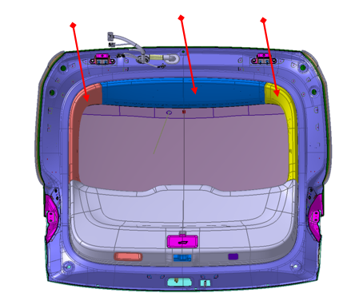
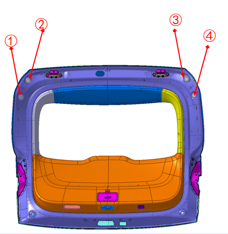
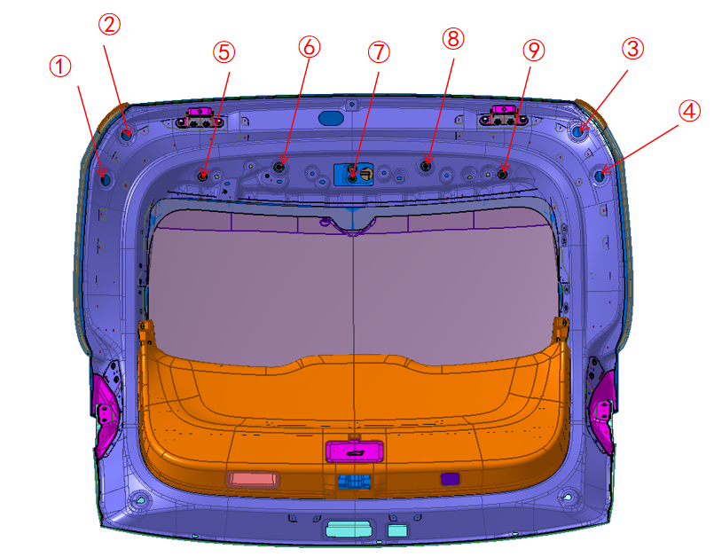
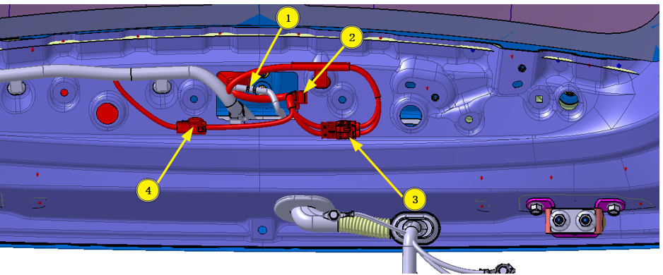
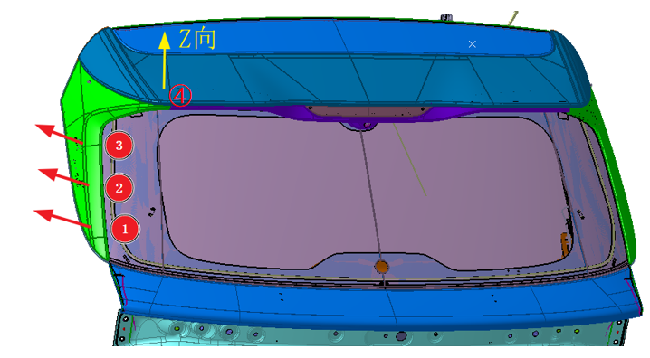
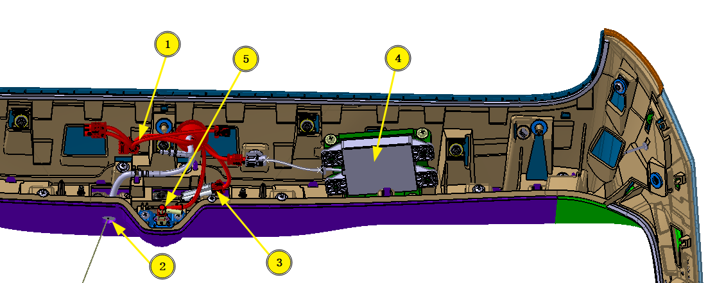

Снятие
1. Демонтировать узел декоративной панели верхней части двери задка и узлы декоративных панелей боковин двери задка (левый/правый), см.: Снятие и установка внутренней облицовочной панели двери задка

2. Демонтировать заглушки двери задка ①–④.

3. С помощью торцевой головки № 10 выкрутить в общей сложности 4 болта с шестигранной фланцевой головкой (номера 1–4) и открутить в общей сложности 5 шестигранных гаек с фланцем (номера 5–9) узла корпуса спойлера.

4. Отсоединить двухходовой штуцер задней форсунки от бачка омывателя, извлечь металлический фиксатор жгута проводов из внутренней панели двери задка, отсоединить электрический разъем жгута проводов дополнительного стоп-сигнала, отсоединить электрические разъемы жгутов проводов навигационной антенны и камеры (при наличии).

5. Сначала вытянуть в направлении стрелки 3 водонепроницаемых фиксатора боковых декоративных панелей спойлера (симметрично слева и справа), затем вытянуть по оси Z 2 фиксатора по бокам узла корпуса спойлера и в завершение снять с листового металла двери задка узел корпуса спойлера и боковые декоративные панели (левую/правую) вместе со жгутом проводов

6. Демонтировать с узла корпуса спойлера жгут проводов, дополнительный стоп-сигнал, антенну спойлера и кронштейн антенны, камеру заднего вида и кронштейн камеры задней очистки, заднюю форсунку омывателя и т. д.

Установка
Установка выполняется в порядке, обратном снятию.